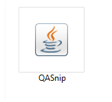
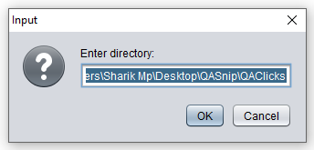
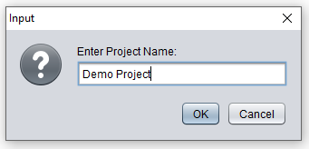
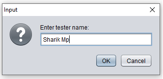
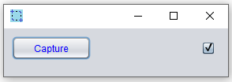
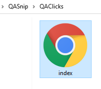

Stop wasting time managing screenshots across multiple files. QA Sniper automatically captures, organizes, and generates HTML galleries for efficient test documentation.
Manual test execution requires tracking screenshots across Excel files and Word documents. QA Sniper centralizes all screenshots in one organized location with automatic indexing.
Designed for speed and efficiency. A single click captures screenshots, saves them, copies paths to clipboard, and generates an HTML gallery - all automatically.
Captures the current screen with a single click and saves it to your configured directory instantly.
Automatically copies screenshot path to clipboard for instant pasting into Excel or test documentation.
Saves all screenshots to user-defined directories with structured organization for easy reference.
Automatically creates an interactive HTML file to view all screenshots in a browsable gallery format.
Add descriptions to screenshots for better documentation. Toggle description prompt as needed for your workflow.
Simple setup wizard to configure project name, tester name, directory location, and preferences on startup.
Download the QA Sniper jar file and double-click it to start the application. The intuitive interface will greet you with a configuration wizard.

Enter a valid directory path where you want to save all your screenshots. This is where QA Sniper will organize and store captured images.

Enter your project name. This will be displayed in the generated HTML gallery and helps organize screenshots by project.

Provide your name as the tester. This information will also be reflected in the generated HTML gallery for tracking purposes.

Decide whether you want to add descriptions to screenshots. Uncheck the box if you prefer quick captures without descriptions.

Start taking screenshots during your test execution. Open the generated "index.html" file in the configured directory to view your screenshot gallery with all metadata.

Download QA Sniper now and experience efficient screenshot management. Perfect for manual testers who want to spend less time organizing and more time testing.